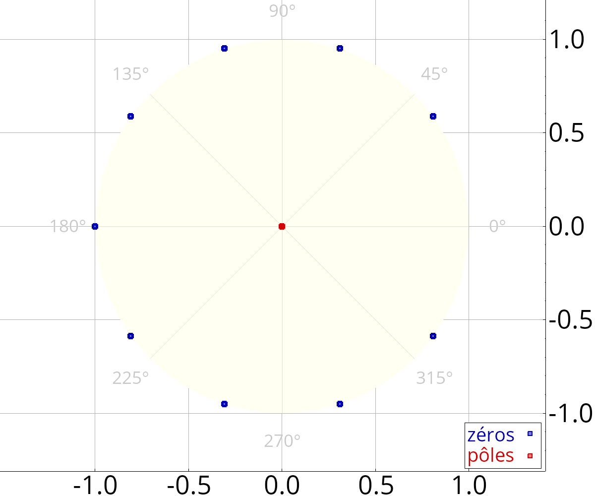
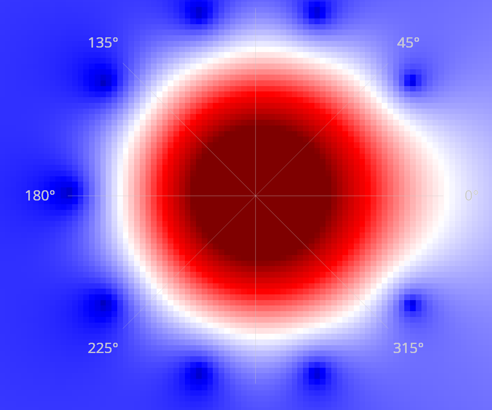

plot_plz (1)
Tracé des pôles et zéros.
Prototype
void plot_plz(Figure &fig, const FRat<T> &h, bouléen cmap=non)
Paramètres
| fig | Figure sur laquelle sera tracé le diagramme des pôles et zéros. |
| h | Fonction de transfert ou vecteur des coefficients |
| cmap | Si vrai, dessine une carte de couleur représentant la magnitude de la réponse. |
Description
La fonction de transfert passée en paramètre est factorisée sous la forme :
où les \(z_i\) et les \(p_i\) sont ce que l'on appelle respectivement les zéros et les pôles de la fonctions de transfert.
Exemple

Résultat, avec cmap=oui :
